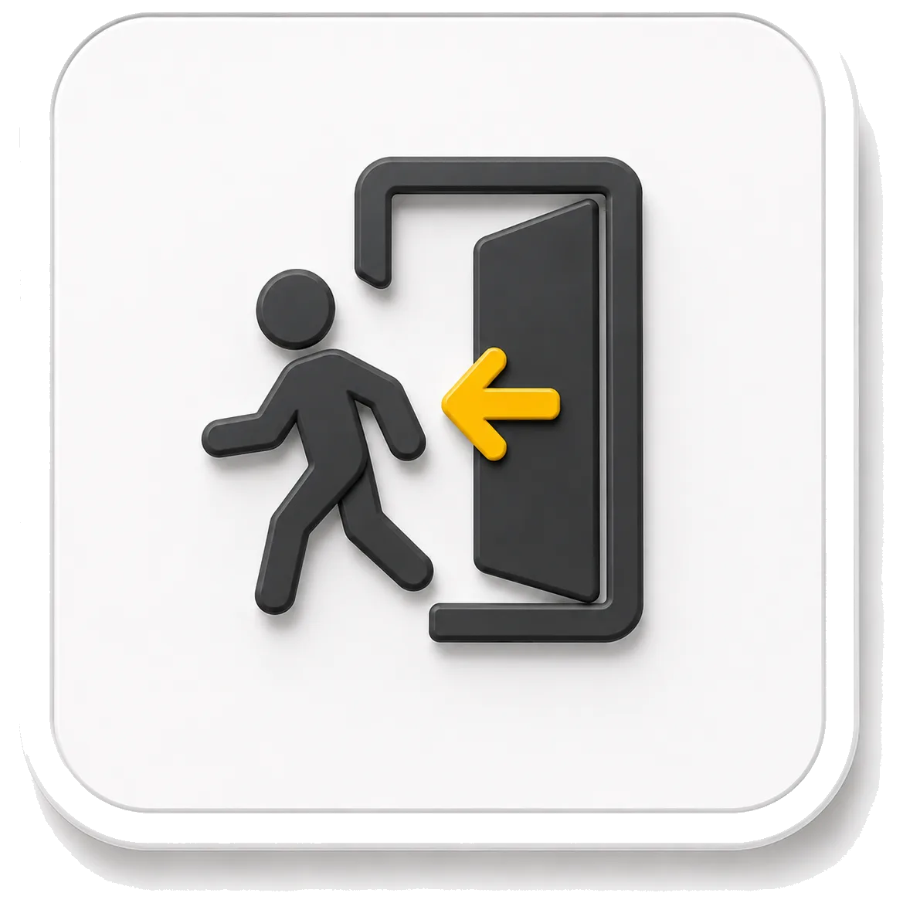
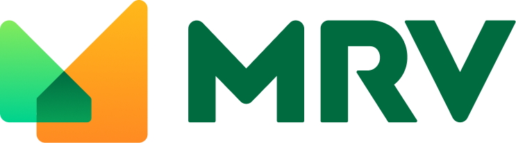
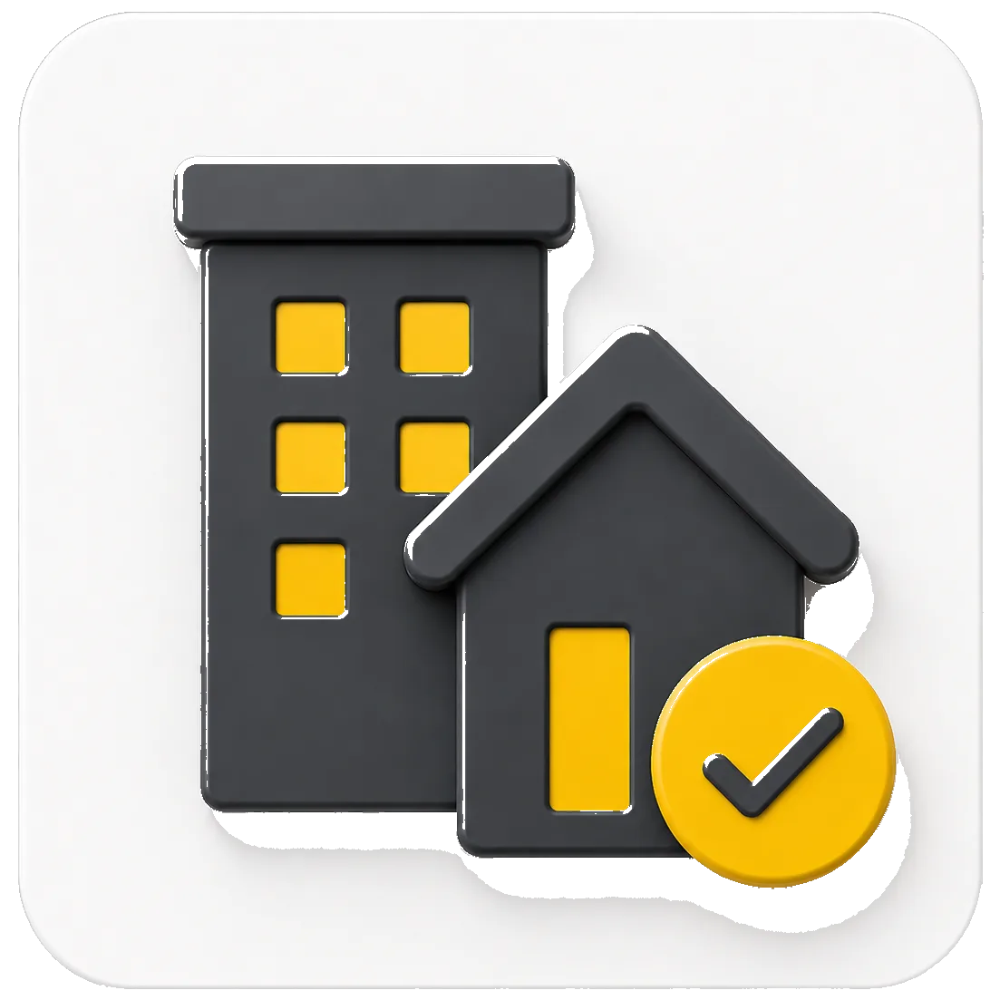
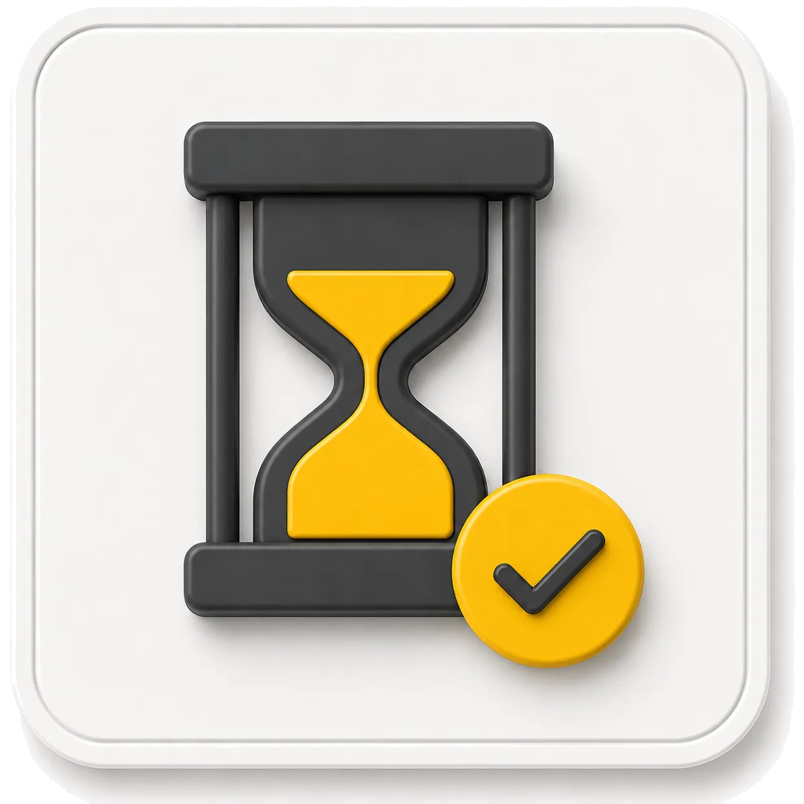
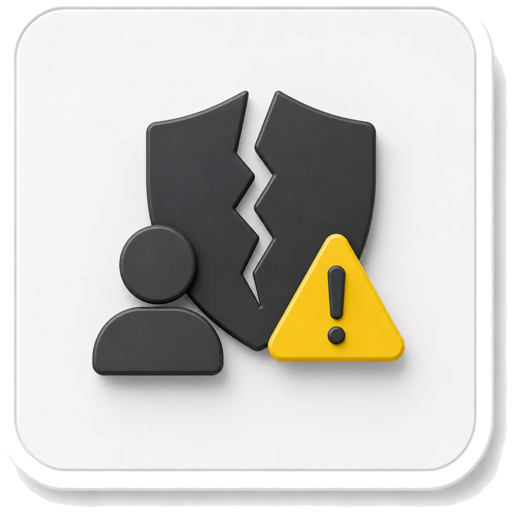
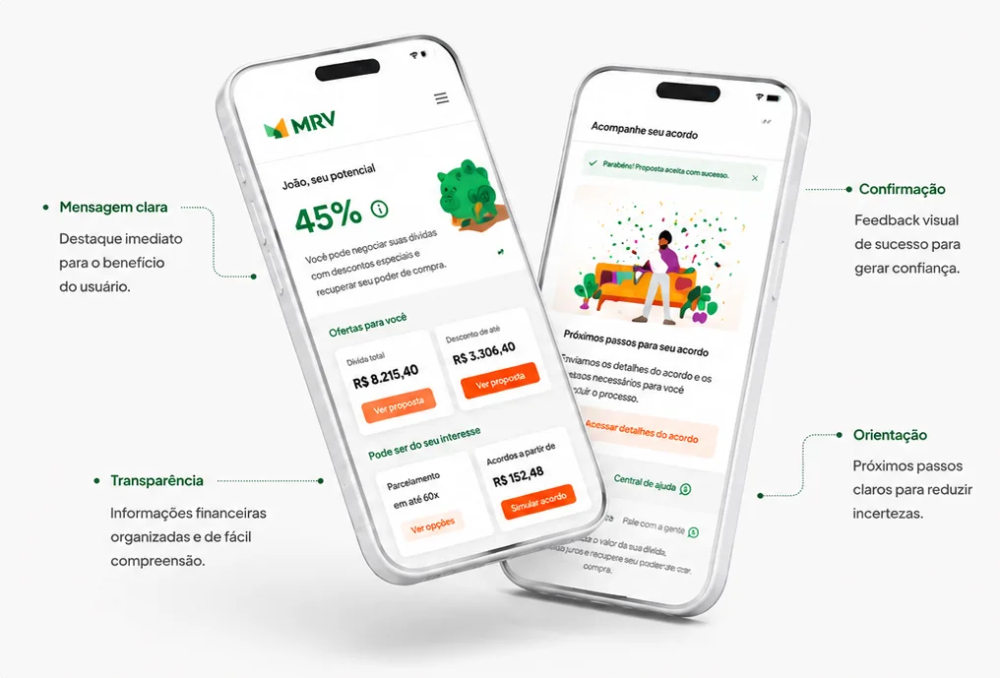
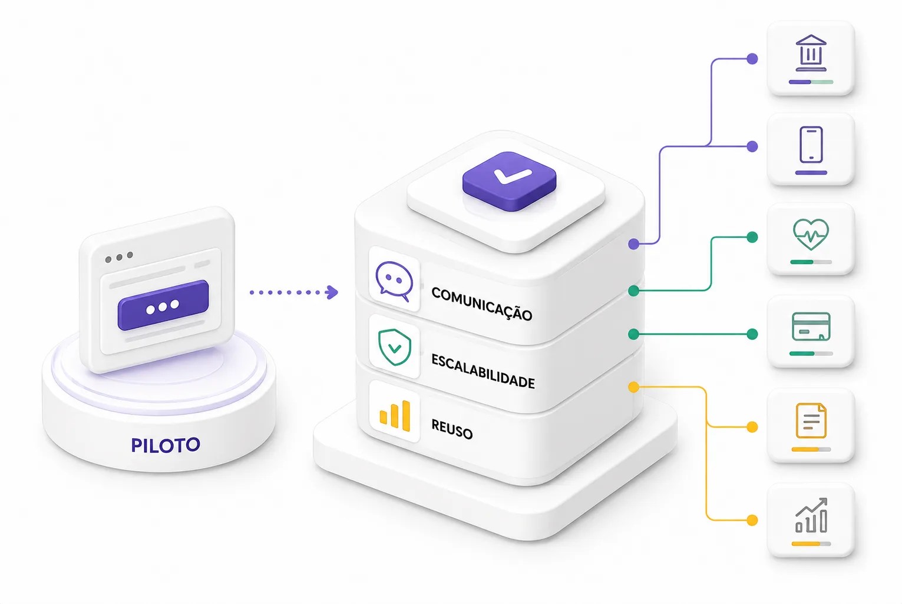

Fricção
Abandono e fricção
Doze pontos críticos de desistência ao longo do fluxo. Sem indicadores de progresso, a incerteza fazia o cliente parar antes de fechar o acordo.

Redesenho do autoatendimento financeiro da maior construtora da América Latina, com autonomia real na renegociação de dívidas.
A renegociação no autoatendimento já existia, mas a conversão era baixa e a maior parte dos clientes ainda terminava no call center.
O desafio não era só de interface. Era reconstruir confiança em um momento financeiramente sensível, com clareza e autonomia real.
Foi nesse contexto que entrei como Design Lead.
Liderei o redesenho do fluxo de renegociação ponta a ponta, do diagnóstico de fricções à evolução do componente em escala no portal financeiro.

Cadastrados no app MRV, com financiamentos de longo prazo.

Financiamentos longos, com alta complexidade jurídica e financeira.
Renegociação de dívidas, parcelas a vencer e status de obra.
A renegociação digital já existia, mas a conversão era baixa e o cliente quase sempre terminava no call center. Mapeei os pontos de fricção e os agrupei em quatro frentes.

Doze pontos críticos de desistência ao longo do fluxo. Sem indicadores de progresso, a incerteza fazia o cliente parar antes de fechar o acordo.

A interface não transmitia segurança para uma decisão financeira de longo prazo. A comunicação fria e institucional afastava em vez de acolher.
Mais de quarenta termos técnicos, como "encargo moratório", bloqueavam a ação. A informação densa exigia esforço para entender o essencial.
Cada falha no autoatendimento virava uma ligação de oito minutos. A dependência do call center crescia, cara para a operação e lenta para o cliente.
Cada decisão de design partiu de uma pergunta: esse sinal devolve autonomia ou cria nova dúvida?
A estratégia preservou a estrutura existente do app, sem novas etapas — a interface se reorganizou em torno da clareza, não da quantidade.
Quatro princípios orientaram o redesign.
Telas densas com mais de 40 termos técnicos e jornada linear sem indicadores de progresso.
Destravar o primeiro passo da decisão, removendo etapas que não agregam à escolha.
Propostas elegíveis aparecem dentro do fluxo financeiro, sem o cliente precisar buscar.
Tipografia, cor e densidade comunicam escala e consequência antes da leitura.
Reaproveitamento da arquitetura do app, sem inflar o fluxo com novas etapas.
Jargão financeiro traduzido em linguagem acessível e validada em testes.
Componentes documentados com cor, animação e copy contextual.
Cada board sinalizado e orientado pelo estado financeiro do cliente.
A interface muda de tom conforme a situação financeira do cliente evolui. Cinco estados progressivos, dos 46% aos 100% da jornada, cada um com hierarquia, copy e microinterações próprias.



O extrato financeiro foi redesenhado com filtros por categoria (MRV, Cartório, Banco), estados claros para boletos pagos e pendentes, e ações diretas que eliminam ambiguidade. O percurso devolve a confiança e fecha o acordo com autonomia.
Filtro por categoria com estados visuais claros para pagamentos já confirmados. Hierarquia reduzida para não competir com ações pendentes.

Cada padrão documentado como design tokens e componentes escaláveis: paleta semântica, escala tipográfica, sistema de espaçamento, shadow e opacidade. A base garantiu consistência entre os três domínios do produto.
Paleta principal com cores semânticas e tons de marca aplicados por estado e hierarquia.

A meta do piloto era destravar a renegociação no autoatendimento sem criar novas etapas nem dependência humana. Em dois sprints, os sinais de progresso e a linguagem acessível reverteram o quadro.
Validado o impacto no piloto, evoluí o fluxo e os componentes para ganhar segurança, consistência e eficiência em todo o ecossistema financeiro do portal.

Ajustes de comunicação no fluxo e regras de elegibilidade para reduzir insegurança, integrados à régua de comunicação e às propostas de acordo.
Expansão do componente para outros pontos do portal e padronização da solução para reuso entre squads, com campanha de educação financeira.
O componente foi reaproveitado em seis jornadas após a expansão, sustentando o ganho com consistência visual entre as squads.
Lições que reforçam o impacto do design em fluxos financeiros sensíveis.
Em fluxos financeiros, a ausência de sinalização e de feedback gera mais insegurança do que a falta de detalhes.
Pequenos sinais visuais reduzem dúvidas e fricções sem alterar a arquitetura do fluxo.
O impacto não veio de uma tela melhor, e sim de uma solução reutilizável e sustentável.
Apresentação visual do portal: navegação, interface principal e identidade de acesso em uso.
Percurso pelo portal financeiro e a estrutura de menus do ecossistema.
A tela central do extrato e dos acordos em funcionamento.
Entrada e autenticação com a linguagem visual do produto.

Disponível para projetos remotos